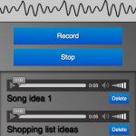
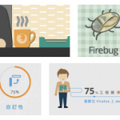

11月282014 Randy 標準化的錄影API  當 HTML5 發展日漸成熟之際，在多媒體的輸出原生支援方面，目前已經支援了大多數網路常見的格式，所以開發者可以使用 audio 或是 video tag 來進行影音播放控制。但輸入方面，目前各家瀏覽器並無統一的 API 實作，為解決此問題，W3C 委員會在 2013 年開始制定了MediaReco...
11月172014 Hunter Luo 建構 Firefox OS 操作介面的基本元素: Fira Sans 字型 字型是使用者介面的基礎，所有顯示在畫面上的資訊都是由圖跟文字構成的。舉凡使用者需要閱讀、了解文意、或是進一步進行操作動作選擇的地方，不論是一段說明文字、一個對話框、圖示下面的標題文字、或是確認、取消的按鈕、系統設定畫面…等等，皆需要文字來構成。其實在介面設計中，沒有刻意去注意的話，可能不會發現，原來...
11月122014 小y 四個 SVG 動畫應用範例 － Firefox 十週年活動網站技術解密  10yearssvg不知道大家有沒有注意到，這次的 Firefox 十週年活動網站上出現了一些特殊的動畫元素。這些元素不是 GIF 圖素，也不需要複雜的動畫套件，而是運用了 SVG 本身具備的動畫功能。 使用 SVG 來做動畫有幾個好處： 首先因為是向量圖形，所以任意縮放變形都不怕出現鋸齒顆粒。 多...